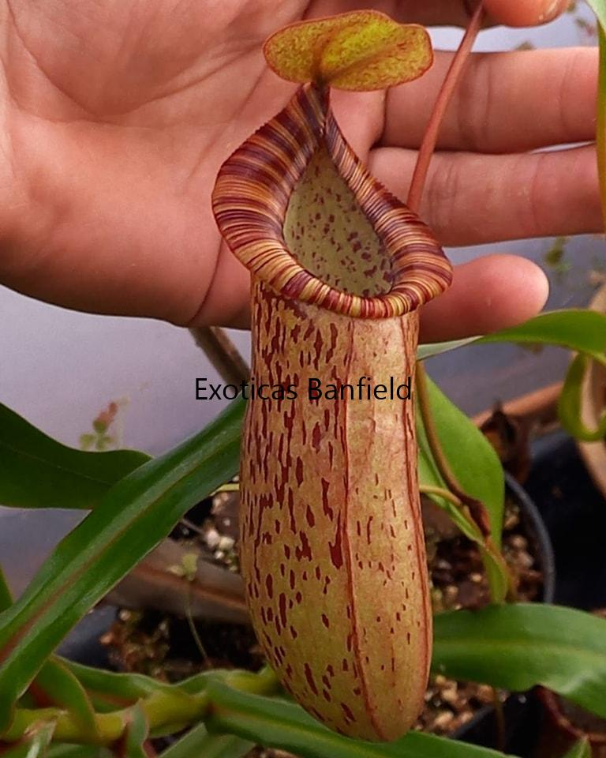
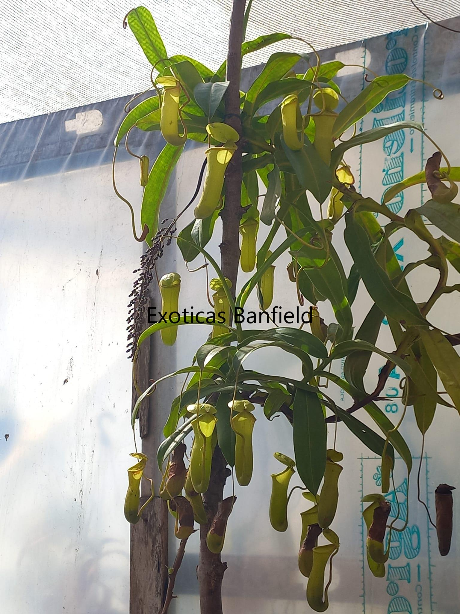
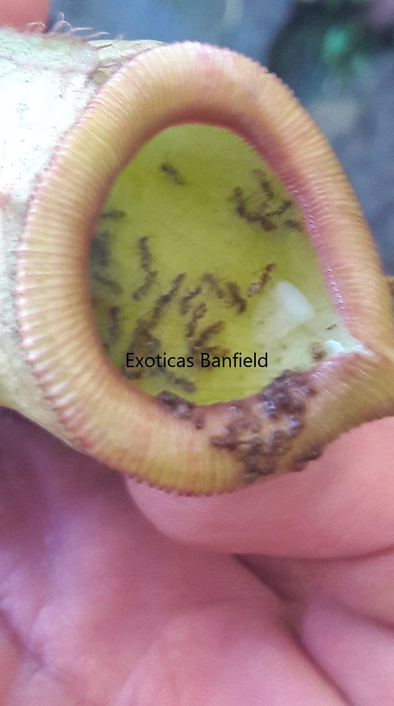

Nepenthes
Hábitat Natural
Ubicación: Las Nepenthes se encuentran en regiones tropicales de Asia, incluyendo Malasia, Indonesia, Tailandia, Filipinas y Australia. También existen especies en Madagascar y algunas islas del Océano Índico.
Condiciones: Habitan desde zonas húmedas y pantanosas hasta montañas de mediana altura.
Entorno: Prefieren suelos ácidos, pobres en nutrientes y climas húmedos, con luz indirecta filtrada. Suelen crecer en lugares donde la competencia por nutrientes es baja.
Descripción
Son plantas carnívoras con hojas modificadas en forma de jarro, de variados colores y tamaños. Estas estructuras permiten capturar y digerir insectos y pequeños animales. Además, trepan usando sus zarcillos para alcanzar luz suficiente.
Forma: La planta presenta una roseta basal de hojas lanceoladas, de las cuales emergen los jarros. Los zarcillos se enrollan y permiten soporte y crecimiento vertical.
Categorías: Se dividen en Lowland (baja altitud), Intermedias y Highland (alta montaña). Existen híbridos naturales y cultivados por aficionados.
En Argentina: Las Intermedias y sus híbridos son las más adaptables a los climas locales, siempre bajo condiciones controladas de temperatura y humedad.
Tamaño
Tamaño máximo: Puede variar según la especie. Algunas variedades trepadoras superan los 3 metros en cultivo óptimo.
Las trampas pueden medir entre 5 y 30 cm; las más grandes son capaces de capturar pequeños insectos y ocasionalmente roedores pequeños.
Método de Captura - Pasivo
Mecanismo: Los insectos son atraídos por néctar en el borde del jarro y resbalan hacia el interior, cayendo en un líquido digestivo. Las paredes internas son resbaladizas y contienen enzimas que descomponen a los insectos, liberando nutrientes.
En cultivo húmedo, se pueden observar gotas de néctar en el borde de los jarros.
Temperatura
Rango natural: Entre 10ºC y 30ºC según la altitud.
Lowland: 20ºC a 35ºC todo el año. Temperaturas menores afectan su desarrollo.
Intermedias: 15ºC a 30ºC.
Highland: Diurnas 20ºC-25ºC, nocturnas 15ºC-20ºC.
Algunas especies pueden requerir climatización artificial y alta humedad en interiores.
Precauciones: Evitar exposición prolongada a sol directo y calor intenso (>30ºC).
Humedad
Nivel de humedad: Óptimo entre 70% y 80%.
Se recomienda invernadero o ambiente controlado. Sin humedad adecuada, las trampas no se desarrollan correctamente.
Algunos híbridos como x Ventrata, Ventricosa x khasiana y Maxima toleran condiciones ligeramente más secas.
Riego
Agua: Solo destilada o de lluvia. Regar directamente el sustrato; evitar encharcar bandejas.
Estaciones:
Primavera/Verano: Mantener sustrato húmedo, sin agua estancada. Las plantas crecen activamente y requieren más agua.
Otoño/Invierno: Mantener ligeramente húmedo; dejar que el sustrato se seque un poco antes de regar para evitar pudrición.
Floración
Ciclo: Florecen generalmente después de 3 a 4 años. La floración puede ocurrir en cualquier época y dura pocos días. Cada planta produce flores masculinas o femeninas; la polinización requiere otra planta de la misma especie.
Flores: Pequeñas, agrupadas en inflorescencias alargadas sobre la roseta. Pueden ser verdes, amarillas o rojas según la especie.
Trasplantes
Época: Primavera o verano.
Motivo: Solo necesario si el tamaño de la maceta limita el crecimiento o el desarrollo de raíces.
Iluminación
Requieren luz intensa indirecta. Highland necesita menos luz directa que Lowland.
Exterior: Se aclimatan gradualmente al sol directo. Luz filtrada es preferible.
Interior: Cerca de ventana luminosa; se puede complementar con luz artificial.
Problemas: Poca luz produce hojas alargadas y jarros deformes. Incrementar luz si esto ocurre.
Sustrato
Requerimientos: Ácido, pobre en nutrientes. Mezclas comunes: turba rubia + perlita, o musgo sphagnum + perlita en proporciones 50/50 a 70/30.
Opciones: Añadir corteza de pino o piedra pómez mejora drenaje.
Hibernación
Las Nepenthes no hibernan, pero bajo 10ºC detienen su crecimiento.
Alimentación
Dieta: Capturan insectos y pequeños animales por sí mismas. No requieren alimentación manual, aunque se puede ofrecer insectos ocasionalmente. Algunas especies toleran caracoles o lagartijas, pero el olor de la digestión puede ser fuerte.

Maxima x Spectabilis - Trampa

Ventricosa x Khasiana - adulta

Viking x Ventricosa lleno de insectos